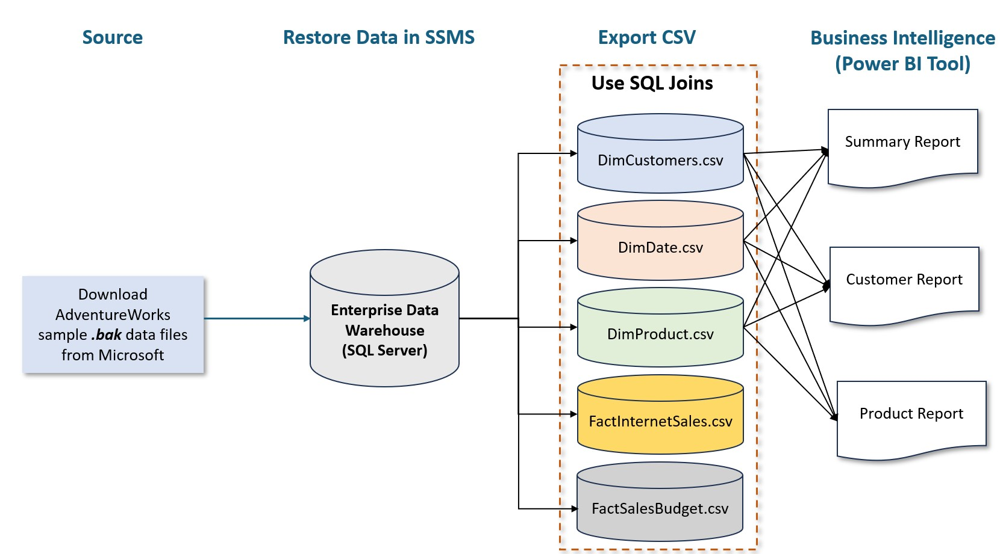
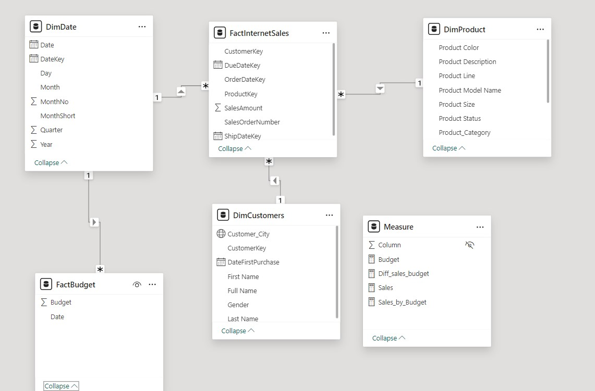

Go Back
The Sales Overview Power BI Dashboard project is centered on data loading, transformation, and visualization using MS Excel, SQL, and the Power BI Dashboard.
Reference Links:
https://learn.microsoft.com/en-us/sql/samples/adventureworks-install-configure?view=sql-server-ver16&tabs=ssms
Data Extracted:
2019
Download, Restore & Clean Data in SQL Server
1) Download the required data – AdventureWorks2019.bak.
2) Open SQL Server Management Studio (SSMS) and connect to SQL Server instance.
3) Right-click Databases in Object Explorer > Restore Database to restore the data in SSMS.
4) Use SQL table joins to select relevant data while excluding erroneous and null values.
a.) DimCustomers.csv
b.) DimDate.csv
c.) DimProduct.csv
d.) FactInternetSales.csv
e.) FactSalesBudget.csv

Problem Statement:
The project aims to develop a Sales Dashboard that provides a comprehensive overview of sales performance, product sales, and customer engagement. By utilizing Microsoft sample data, the dashboard enables businesses to make informed decisions by visualizing key metrics, identifying trends, and enhancing overall sales strategy. The challenge is to effectively present complex sales data in a user-friendly format to support data-driven decision-making.
Utilized functionality in Power BI:
• Data Import and Integration
• Power Query for Data Transformation
• DAX (Data Analysis Expressions)
• Interactive Dashboards
• Custom Visualizations
• Bookmarks for Report Navigation
• Toolkit
• Data Modeling and Relationships
• Integration with Microsoft Excel
Here are some key insights:
1) Top-Selling Products: This insight highlights the top 10 products and top 10 customers contributing the most to overall revenue. By identifying high-performing products, businesses can focus on inventory management, marketing strategies, and meeting customer demand, while also addressing underperforming products that may need adjustments.
2) Sales by Product Category: This insight breaks down total sales across different product categories, helping businesses identify which categories contribute the most to overall revenue. It enables more targeted inventory management and marketing strategies based on category performance.
3) Summary of Total Sales and Purchases with Budget Comparison: This insight provides a comprehensive overview of total sales and total purchases while comparing actual sales performance against the budget.
4) Customer and Product Report: Customer and Product by Subcategory: This insight showcases the performance of products organized by subcategories, highlighting how different products resonate with various customer segments.
Click here to see >> GitHub
